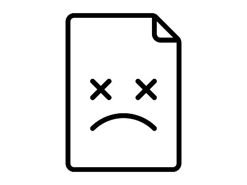

<ion-header [translucent]="true">
  <ion-toolbar>
    <ion-buttons slot="start">
      <ion-back-button></ion-back-button>
    </ion-buttons>
    <ion-title>Error 404</ion-title>
  </ion-toolbar>
</ion-header>

<ion-content [fullscreen]="true" class="ion-padding">

  <div class="center-content">
    <h1>Página no encontrada.</h1>
    
    <br>
    <ion-button expand="block" [routerLink]="['/login']">Ir a Login</ion-button>
  </div>
</ion-content>